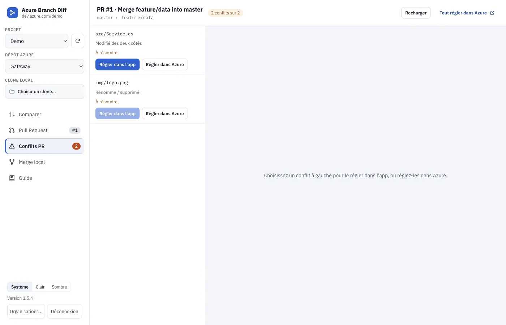

Comparez vos branches Azure DevOps. Fusionnez sans cloner.
Une application de bureau pour voir le diff entre deux branches, ou entre une branche et votre dossier local, créer la Pull Request et régler les conflits, dans Azure ou directement dans l'app.

Ce que fait l'app
Diff entre branches
Comme une PR (depuis l'ancêtre commun) ou tête contre tête. L'éditeur de VS Code, côte à côte ou unifié, avec coloration C#, SQL, XML, JSON…
Branche ↔ dossier local
Vos modifications non commitées comparées à la branche distante. Respecte .gitignore et core.autocrlf : pas de faux positifs CRLF/LF.
Pull Request en un clic
Reprend la PR active si elle existe, lie les work items, attend le calcul du merge, puis complète (merge, squash, rebase).
Conflits : vous choisissez
Réglez-les dans Azure, ou dans l'app : source, cible et résultat modifiable, « garder source / cible / les deux ».
Rapide sur les gros dépôts
Aucun clone : seuls les fichiers modifiés sont téléchargés. Des milliers de fichiers modifiés restent fluides à parcourir et à filtrer.
Mises à jour automatiques
Sous Windows, la nouvelle version s'installe au redémarrage. Sous macOS, l'app vous prévient et télécharge le nouvel installeur.
Aperçu



Télécharger
macOS · Apple Silicon
Télécharger le .dmgmacOS · Intel
Télécharger le .dmgWindows
Télécharger l'installeurPremier lancement
Les installeurs ne sont pas signés par un certificat éditeur :
- macOS : glissez l'app dans Applications, puis clic droit → Ouvrir. Si macOS indique que l'app est endommagée :
xattr -dr com.apple.quarantine "/Applications/Azure Branch Diff.app" - Windows : « Windows a protégé votre ordinateur » → Informations complémentaires → Exécuter quand même.
Connexion
- Dans Azure DevOps : avatar → Personal access tokens → New Token.
- Droits : Code — Read & Write et Work Items — Read.
- Dans l'app : l'URL de votre organisation (
https://dev.azure.com/…) et le jeton.
Sécurité
Jeton chiffré
Le PAT est chiffré par le trousseau du système (Keychain, DPAPI), jamais écrit en clair ni transmis à l'interface.
Electron verrouillé
Isolation de contexte, sandbox, pas de Node dans l'interface, CSP stricte, navigation et popups bloquées.
Testé
Tests de sécurité, d'accessibilité (WCAG AA), de performance et de bout en bout sur macOS, Windows et Linux à chaque version.